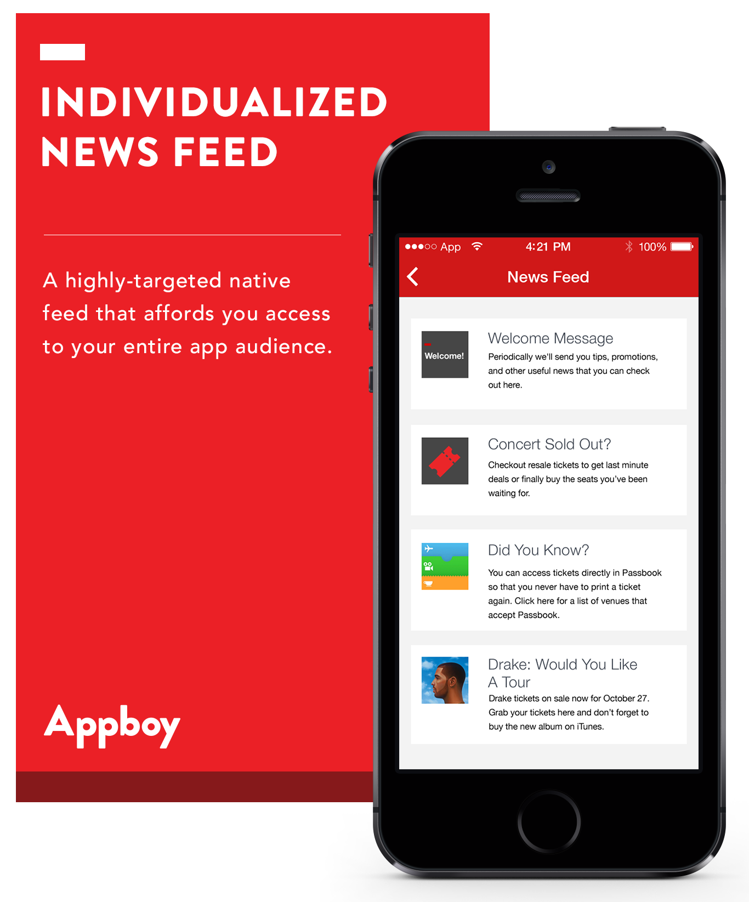
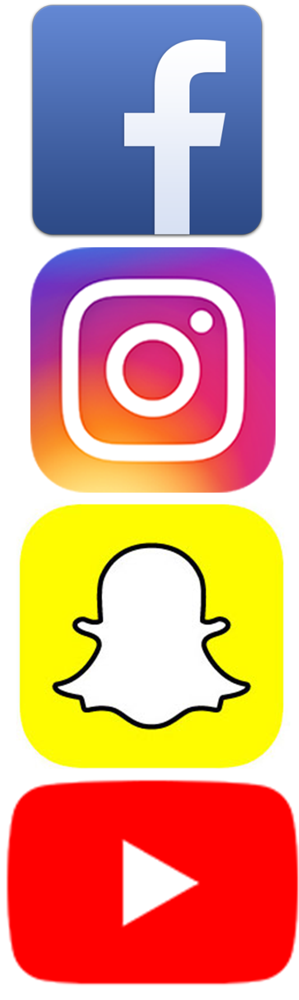
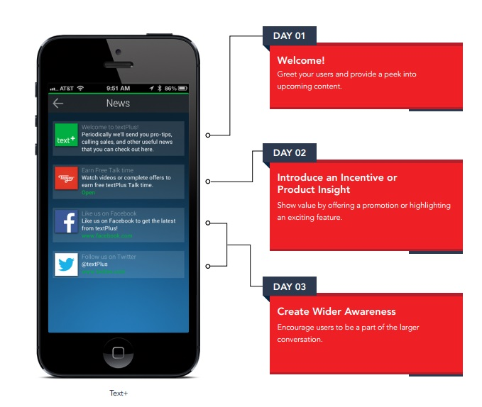

"It's the best of both worlds: Outlets can choose what type of content they want to share - video, text, image - and who they want to share it with. And users feel like they're getting exactly the kind of info they want, in the place where they're making most of their daily interactions."
It's not where you go for your news. It's how you get it. News is about to get personal. I came to this realization after a few job interviews over the last month or so. I recently left my position at Google to pivot back into media and spoke to a number of different editors at different organizations. One of their biggest questions seemed to be where I got my news. Instead of naming a few publications, or networks, I told the truth: everywhere. Or rather, I get my news from whichever publication provides the information to me in the fastest and most convenient places. If a story is packaged creatively on Instagram Stories, Twitter, or through a push notification, that's where I consume it.
In 2018, I predict news organizations will turn that up a notch - with messaging. Imagine if we could get the news, or news we want, where we get every other urgent message sent to us? Just as The Skimm built a brand on meeting people in their inbox, the same could be said of using messaging for news outlets looking to get even closer to their readers.
With social platforms that tout quick news "highlight reels" and the increasing use of on-the-go devices, the organizations that will make reading lists are the ones with the most interesting content in the most convenient places. As messaging apps create a higher thirst for personalization and immediacy, they also open the lines of communication between reader and journalist and news organizations or individual journalists alike should definitely take advantage of a relationship that's much more direct.
Unlike bots, the way journalists use text message or messaging services won't try to interact with readers so much as they try to get them their news in a more personal and direct way. Instead of solely relying on these social pages for traffic or brand awareness, media companies will have the ability to build a reliable trust with users through texts. And unlike a push notification that has a shelf life, a text will become a personal way for readers to save or archive their news for when they're ready for it, much like a text from anyone they deem worthwhile in their life.  Facebook Groups and social live streams have allowed outlets to get closer than ever to certain demographics, but messaging services will not only expand on these interactions, but allow outlets to segment and target their readers, too. This is especially important if an outlet is attempting to reach a younger audience, like Gen Z. Facebook is no longer the best option. Texting, or direct messaging, is where it's at. I've seen this slowly start to happen already. Earlier this year, I subscribed to a text service in beta called Hope. Hope sends a text each time big news happens along with a link to a way for subscribers, in this case millennial women, to take action.
It's the best of both worlds: Outlets can choose what type of content they want to share - video, text, image - and who they want to share it with. And users feel like they're getting exactly the kind of info they want, in the place where they're making most of their daily interactions.
One of the reasons I love my Apple Watch is because I feel like it's meant just for me. I know everything that comes through is tailored to my needs - and the most vital messages are the ones that I see. And while I will always pledge allegiance to certain outstanding outlets as a journalist, I will still maintain that I get my news everywhere. The same is more true than ever for the rest of my generation, and those who are even younger, too. Instead of building something and hoping readers will come, journalists should figure out a way to get closer to where they already are, and always have been. Right now, that's in the nearest group chat or text convo.
Mandy Velez is a contributing writer at Yahoo and a freelancer.